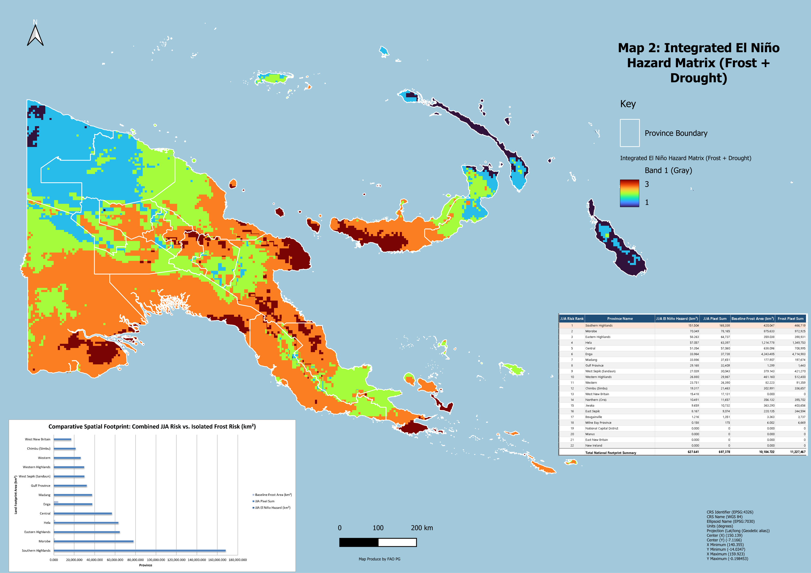

Executive interpretation
The analysis shows two related but different risk patterns. Frost susceptibility is concentrated mainly in high-altitude agricultural basins, especially Enga and surrounding Highlands provinces. The combined JJA El Niño hazard shifts operational attention toward provinces where frost and drought-related stresses overlap or where drought stress dominates.
Multi-risk province explorer
National exposure snapshot
Exposure estimates are planning approximations and require field confirmation.
Top frost footprint provinces
Top combined JJA hazard provinces
Interactive provincial map
ASIS drought and agricultural stress
This section keeps the original ASIS/GIEWS screening logic: rainfall anomaly, NDVI anomaly, VHI, ASI crop stress, and a composite priority score for field verification.
Composite priority score
Drought indicator guide
Rainfall anomaly shows rainfall below or above normal.
NDVI anomaly shows vegetation greenness compared with normal.
VHI combines vegetation condition and temperature stress.
ASI estimates crop area under stress.
Priority ranking table
| Rank | Province | Priority | Score | YTD rain % | Latest rain % | NDVI % | VHI | ASI % | Plain-language meaning |
|---|
Scenario 1: Frost Susceptibility Framework, JJA focus
The baseline frost model focuses on June, July and August, identifying high-altitude cold-air basins and agricultural zones where ground-level frost can damage crops, especially kaukau and vegetables.
PNG Frost Susceptibility Framework

Map output: PNG Frost Susceptibility Map.png
Frost footprint by province
Strategic frost interpretation
Enga dominates the frost-only footprint, followed by Hela, Morobe, Central, Western Highlands, Southern Highlands, West Sepik, Jiwaka, Eastern Highlands and Northern/Oro.
Frost exposure table
| Rank | Province | High-risk area km² | Est. households | Est. population | Est. communities |
|---|
Scenario 2: Integrated El Niño Hazard Matrix, Frost + Drought
The combined JJA model brings frost and rainfall-deficit stress together. This helps identify operational priorities where agricultural exposure is concentrated, not just where frost area is physically largest.
Integrated El Niño Hazard Matrix

Map output: PNG_Combined_ElNino_Hazard_JJA.png
Combined JJA hazard area
Frost-only vs combined hazard
Combined JJA hazard table
| Rank | Province | JJA hazard km² | Est. households | Est. population | Est. communities | Baseline frost km² |
|---|
Population, household and community exposure
Planning note: These figures are exposure estimates for prioritisation and resource allocation. They should be verified against field reports, census updates, crop calendars, market conditions and local water-source status.
| Province | Frost km² | Frost population | Frost communities | JJA km² | JJA population | JJA communities | Planning reading |
|---|
Operational response framework
| Risk group | Primary footprint | Recommended action |
|---|---|---|
| Highlands core | Enga, Western Highlands, Southern Highlands, Hela, Chimbu and high-altitude basins above 2,200 m. | Seed-stock protection, frost-resilient multiplication hubs, mulch/crop cover advisory, early harvesting protocols, food relief pre-positioning. |
| Lowlands and coast | Western, Gulf, Milne Bay islands, NCD rain-shadow corridors and emerging coastal drought areas. | Water distribution, small-scale irrigation, drought-tolerant crops, field reports on water sources and market prices. |
| Mid-altitude slopes | Eastern Highlands, Chimbu and transition zones around 1,200 to 1,800 m. | Diversify into cassava/yam, soil moisture retention, crop monitoring and local advisory messages. |
Field verification checklist
| Check | What to collect |
|---|---|
| Crop condition | Photos, GPS points, crop type, damage level, garden age. |
| Water availability | Water-source status, distance to water, quality concerns, drying streams. |
| Food access | Meal changes, wild foods, market prices, local shortages. |
| Hazard type | Separate drought damage, frost burn, pests, fire, and flood effects. |
Live GEE Workflow
Purpose of this tab: This section provides access to the Streamlit-based workflow used to support live review, processing, and export of GEE climate-risk layers. It keeps the operational processing workspace connected to the dashboard without changing the existing risk-analysis tabs.
Where browser and Streamlit settings allow, the live app will load below. A direct launch button is also provided for the most reliable access.
Embedded source: png-climate-workspace-v1.streamlit.app. If the embedded view does not load, use the button above to open the live workflow directly.
EarthMap
Purpose of this tab: This section provides access to EarthMap as a complementary reference workspace for exploring contextual layers such as rainfall, vegetation condition, land cover, fire, surface water, and other geospatial indicators relevant to drought and agricultural risk screening.
Embedded source: png.earthmap.org. If the embedded view is restricted by the external site, open EarthMap directly using the button above.